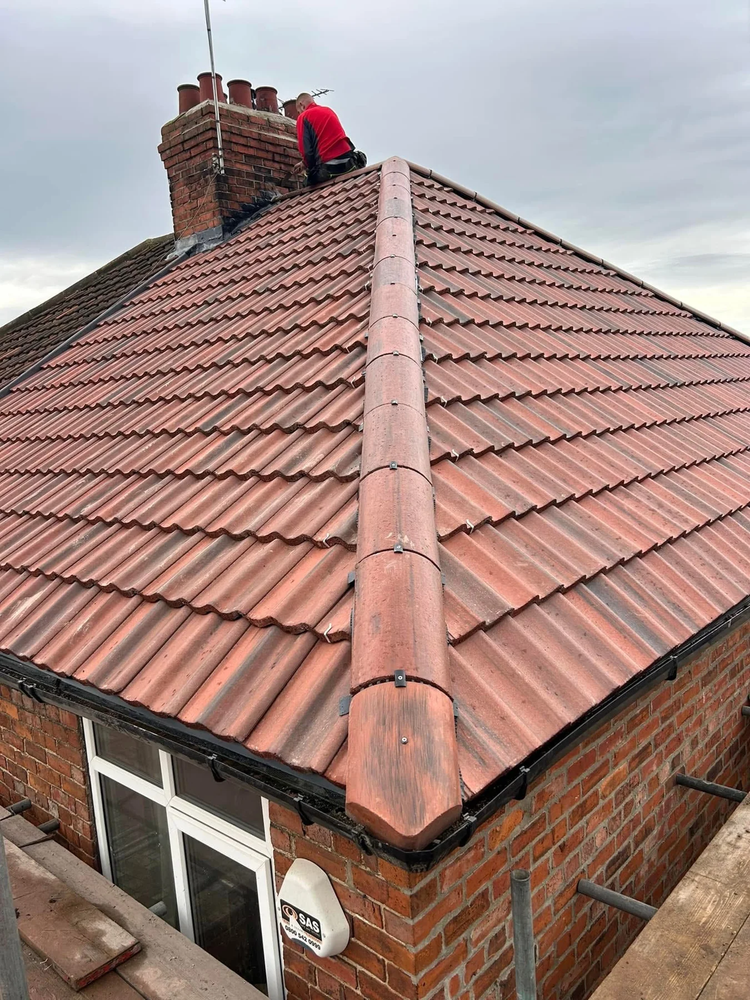
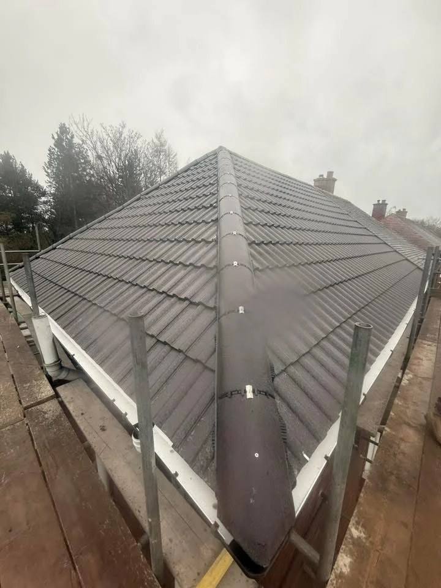
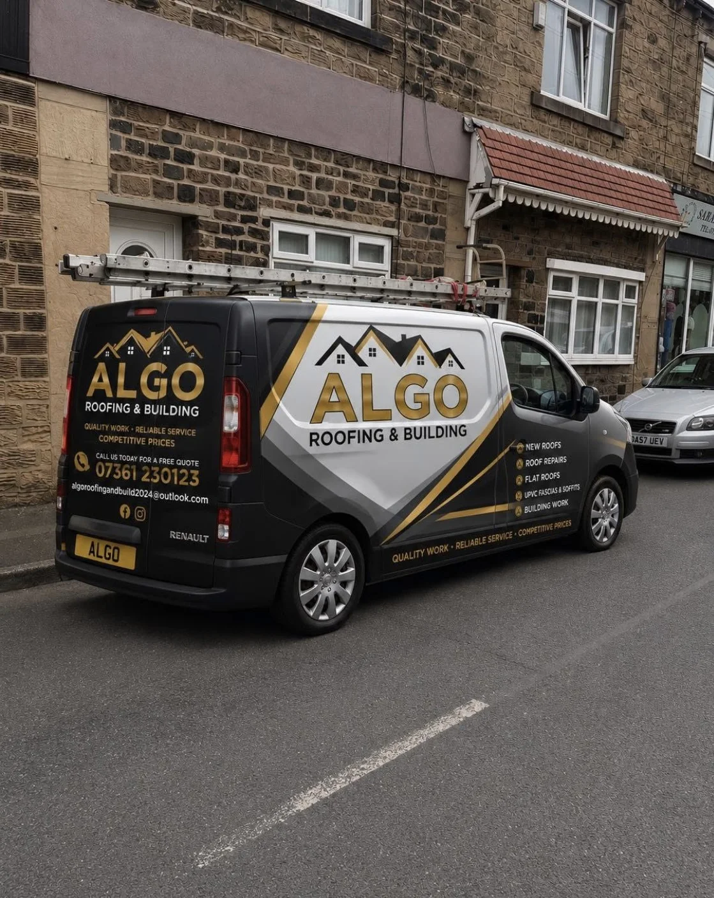

ALGO ROOFING & BUILDING
Quality work.
Built to last.
New roofs, roof repairs, flat roofs and building work. From the roofline to the rooms beneath it, talk to ALGO about your next project.
ROOFING & BUILDING, TOGETHER
Your home.
Our next project.
A replacement roof. A repair that needs attention. A room ready for a fresh finish. ALGO Roofing & Building brings roofing and building services together.
The portfolio shows tiled roof replacements, flat roofing, loft preparation and plasterwork, alongside garden improvements. Share your plans and photographs to discuss the work.
Tell us what you have in mind →

THE WORK BENEATH THE FINISH
Every stage.
Every detail.
Membrane and timber battens form part of the roof replacement process before the new tiles are laid. The supplied project photographs show the preparation and the finished grey tiled roof.
Explore new roof projects →ALGO PROJECT GALLERY
The work.
From roof to room.
Roofing, building and finishing work from the supplied portfolio. Tap any image to see the full photograph.
BEFORE & AFTER
A new roof.
A clear difference.
The existing tiled roof and the replacement grey finish. The project photographs also show the membrane and battens during the work.
Discuss your roof replacement →
ALGO ROOFING & BUILDING
For your home,
built to last.
ALGO offers roofing and building work, including new roofs, repairs, flat roofs, fascias, soffits, guttering and renovation enquiries.
Discuss tiled roof replacements, repairs and flat roofing.
Building, renovation and plastering enquiries, with project photographs showing loft and stairwell work.
Call or send your postcode, photographs and a few details for a free, no-obligation quote.
BEFORE WE GET STARTED
A few useful answers.
What services does ALGO offer?
New roofs, roof repairs, flat roofs, fascias, soffits, guttering and building work. Renovation, brickwork and plastering enquiries are welcome.
What should I send for a quote?
Your postcode, a description of the work and photographs taken from a safe place. Approximate dimensions and any access restrictions are useful too.
Can I enquire about a smaller roof repair?
Yes. Describe the problem and send photos if available so ALGO can discuss the next step.
Do you cover my area?
Send your postcode or call to confirm availability for your property.
How does the WhatsApp form work?
It prepares a message with your chosen service and project details. Review it in WhatsApp, add photos and send it when you are ready.
A FREE, NO-OBLIGATION QUOTE
Your project.
Let’s talk it through.
Tell ALGO about your roof or building plans. Share your postcode and a few details to start the conversation.
ALGO ROOFING & BUILDING
For the roof.
For the whole home.
Speak to ALGO about your next roofing or building project.